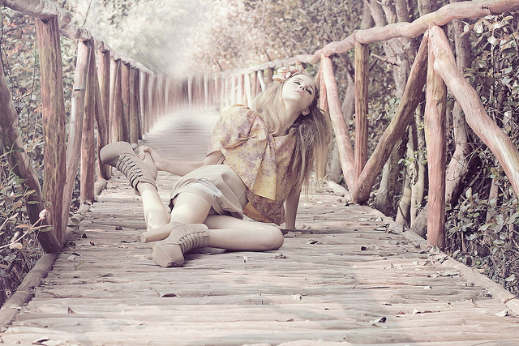
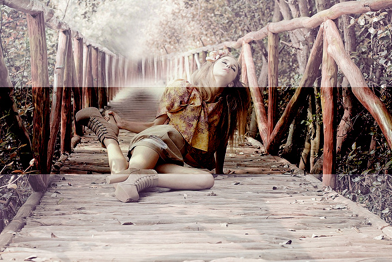

This guide doesn’t cover all changes in 0.3. See also the full list of changes in Version 0.3.0.
Wand finally becomes to support Python 3, the future of Python. It actually doesn’t cover all Python 3 versions, but the most two recent versions, 3.2 and 3.3, are supported. We still support Python 2.6, 2.7, and PyPy as well, so there’s no dropped compatibility.
See also
Wand now adds supports to sequential images like animated image/gif images and image/ico images that contains multiple icons. To distinguish between each single image and the container image, newly introduced class SingleImage has been added. The most of operations and properties are commonly available for both types, Image and SingleImage, and these are defined by their common superclass, BaseImage.
So every Image object now has sequence attribute which is list-like. It implements collections.MutableSequence protocol. That means you can pass it into for statement, get an item by index from it, slice it, call len() for it, or del an item of it by index. Every item inside it is a SingleImage instance.
The following example shows you how to determine the largest icon in a image/ico file:
>>> from wand.image import Image
>>> import urllib2
>>> with Image(file=urllib2.urlopen('https://github.com/favicon.ico')) as ico:
... max(ico.sequence, key=lambda i: i.width * i.height)
...
<wand.sequence.SingleImage: 80d158d (32x32)>
This feature was initially proposed by Michael Elovskikh (#34), and then he also did initial work on this (#39). Andrey Antukh then improved its API (#66). Bear Dong and Taeho Kim did additional efforts for issues related to animated image/gif images (#88, #103, #112).
See also the guide for sequence as well: Sequence.
Wand 0.3 provides basic facilities to draw Lines or Texts.
The following example code writes “Wand” to the transparent background using caption() method:
>>> from wand.font import Font
>>> font = Font(path='tests/assets/League_Gothic.otf', size=64)
>>> with Image(width=300, height=150) as image:
... image.caption('Wand', left=5, top=5, width=490, height=140, font=font)
... image.save(filename='caption-result.png')
...
Adrian Jung and did the most of work for this (#64). Cha, Hojeong added higher-level APIs on this and more text drawing APIs (#69, #71, #74).
Wand now can read EXIF metadata from images through metadata property which is a mapping:
>>> from __future__ import print_function
>>> url = 'http://farm9.staticflickr.com/8282/7874109806_3fe0080ae4_o_d.jpg'
>>> with Image(file=urllib2.urlopen(url)) as i:
... for key, value in i.metadata.items():
... if key.startswith('exif:'):
... print(key, value)
...
exif:ApertureValue 8/1
exif:CustomRendered 0
exif:DateTime 2012:08:27 18:42:15
exif:DateTimeDigitized 2012:08:17 02:33:36
exif:DateTimeOriginal 2012:08:17 02:33:36
exif:ExifOffset 204
exif:ExifVersion 48, 50, 50, 49
exif:ExposureBiasValue 0/1
exif:ExposureMode 1
exif:ExposureProgram 1
exif:ExposureTime 1/50
...
Thanks for Michael Elovskikh who worked on this (#25, #56).
See also the guide for this as well: Reading EXIF.
ImageMagick optionally provides seam carving (also known as liquid rescaling or content-aware resizing) through MagickLiquidRescaleImage() function if it’s properly configured --with-lqr. It makes you able to magically resize images without distortion.
Wand 0.3 becomes to provide a simple method Image.liquid_rescale() which binds this API.
You can find more detail examples in its guide: Seam carving (also known as content-aware resizing).
Some channel-related APIs like wand.image.Image.channel_images, channel_depths, and composite_channel() are added in Wand 0.3.
The following example makes the overlayed image (second, composite-channel-result.jpg) from the original image (first, composite-channel.jpg):
 import shutil
import urllib2
from wand.image import Image
from wand.color import Color
url = 'http://farm6.staticflickr.com/5271/5836279075_c3f8226bc1_z.jpg'
with open('composite-channel.jpg', 'wb') as f:
u = urllib2.urlopen(url)
shutil.copyfileobj(u, f)
u.close()
with Image(filename='composite-channel.jpg') as image:
with Image(background=Color('black'),
width=image.width,
height=image.height / 3) as bar:
image.composite_channel(
channel='all_channels',
image=bar,
operator='overlay',
left=0,
top=(image.height- bar.height) / 2
)
image.save(filename='composite-channel-result.jpg')
Note
The image composite-channel.jpg used in the above example is taken by Ejja Pahlevi and licensed under CC-BY-2.0. It can be found the original photography from Flickr.
Every image now has histogram attribute, which is dictionary-like. Its keys are colors that used once or more in the image, and values are are the numbers of the pixels.
For example, simply get keys() of histogram if you need its palette.
>>> url = 'http://farm7.staticflickr.com/6145/5982384872_cb1e01004e_n.jpg'
>>> with Image(file=urllib2.urlopen(url)) as image:
... palette = image.histogram.keys()
{kind=link}
{kind=link}